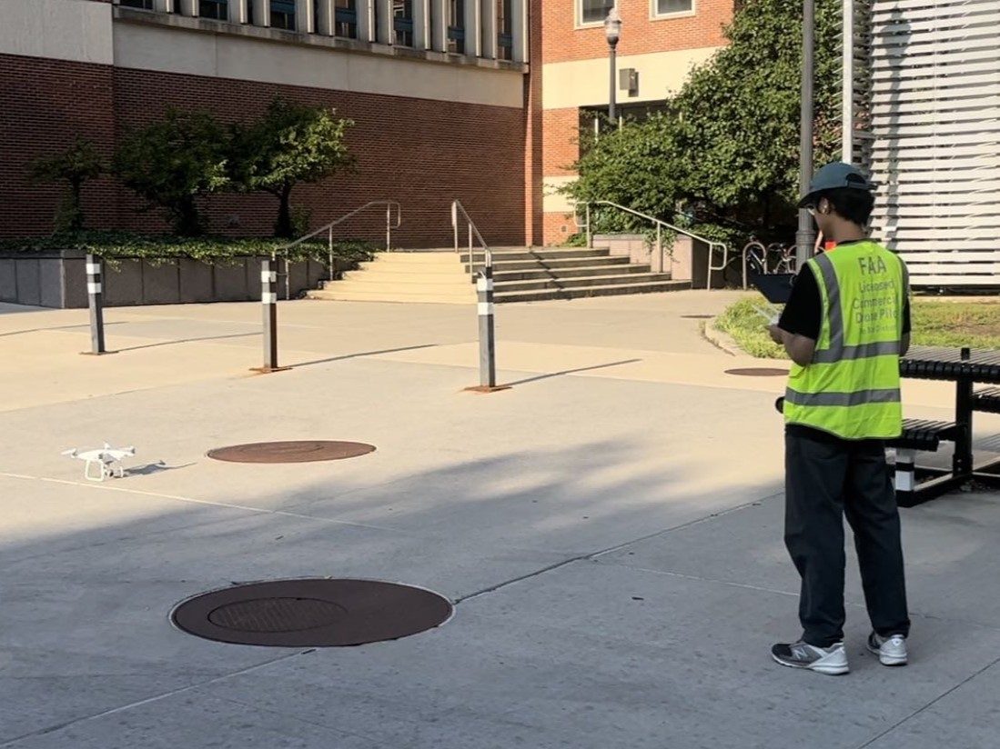

|
Debao Huang I'm a PhD student in the Geospatial Data Analytics Group at The Ohio State University. I started in January 2021 and am supervised by Prof. Rongjun Qin. My research interests lie in 3D reconstruction and uncertainty modeling. I am working on multiple projects funded by ONR and IARPA to solve 3D geometry problems and tasks. |

|
News |
|
04/2024 |
Our new paper of incorporating motion constraints in Bundle Adjustment of Structure-from-Motion for uncalibrated multi-camera systems, got published in ISPRS Journal of Photogrammetry and Remote Sensing. |
|
04/2024 |
Our new paper of proposing a new scheme to scale up NeRF for large-scale aerial images, got published in The Photogrammetric Record. |
|
06/2023 |
Our new paper of the preliminary study of uncertainty quantification in MVS, got accepted to ISPRS Geospatial Week 2023. |
|
05/2022 |
Our new paper of baseline constraint in BA for SfM using uncalibrated multi-camera systems, got accepted to ISPRS Congress 2022. |
|
04/2022 |
Our new paper of evaluation of PlanetScope images for 3D reconstruction and change detection, got published in GIScience & Remote Sensing Journal. |
|
08/2021 |
Our new paper of 3D change detection of a building deconstruction event using UAV images, got published in International Journal of Digital Earth. |
My Research |

|
BUNDLE ADJUSTMENT WITH MOTION CONSTRAINTS FOR UNCALIBRATED MULTI-CAMERA SYSTEMS AT THE GROUND LEVEL
Debao Huang, Rongjun Qin, Mostafa Elhashash ISPRS Journal of Photogrammetry and Remote Sensing, 2024 paper | video This paper derives novel geometric constraints in BA of SfM pipeline that assumes minimal knowns about the uncalibrated multi-camera systems at the ground level. Our proposed constraints are effective in correcting topographical errors (i.e., trajectory drifts) of the reconstruction. It benefits the broader use of photogrammetry with low-cost and non-expert use cases to generate 3D products with improved accuracy. |

|
MULTI-TILING NEURAL RADIANCE FIELD (NERF)—GEOMETRIC ASSESSMENT ON LARGE-SCALE AERIAL DATASETS
Ningli Xu, Rongjun Qin, Debao Huang, Fabio Remondino The Photogrammetric Record, 2024 paper This paper provides multi-camera tiling (MCT) strategy to scale the NeRF on large-scael aerial datasets and a thorough geometry assessment of NeRF. |

|
A CRITICAL ANALYSIS OF INTERNAL RELIABILITY FOR
UNCERTAINTY QUANTIFICATION OF DENSE IMAGE MATCHING IN MULTI-VIEW
STEREO
Debao Huang, Rongjun Qin ISPRS Annals of the Photogrammetry, Remote Sensing and Spatial Information Sciences, 2023 paper This paper presents preliminary study of metrics in the dense matching and MVS fusion process, to learn heuristic correlation for propagating errors to the final point clouds. |

|
CONSTRAINED BUNDLE ADJUSTMENT FOR STRUCTURE
FROM MOTION USING UNCALIBRATED MULTI-CAMERA SYSTEMS
Debao Huang, Mostafa Elhashash, Rongjun Qin ISPRS Annals of the Photogrammetry, Remote Sensing and Spatial Information Sciences, 2022 paper This paper proposes a bundle adjustment (BA) solution for uncalibrated cameras with overlapping views by incorporating a so-called baseline constraint which builds the link between two cameras that are static to each other. |

|
AN EVALUATION OF PLANETSCOPE IMAGES FOR 3D
RECONSTRUCTION AND CHANGE DETECTION – EXPERIMENTAL VALIDATIONS WITH
CASE STUDIES
Debao Huang, Yang Tang, Rongjun Qin GIScience & Remote Sensing, 2022 paper | video This paper comprehensively evaluates the 3D potential of PlanetScope images by performing accuracy analysis for both 3D reconstruction and change detection. |

|
A VOLUMETRIC CHANGE DETECTION FRAMEWORK USING
UAV OBLIQUE PHOTOGRAMMETRY – A CASE STUDY OF ULTRA-HIGH-RESOLUTION
MONITORING OF PROGRESSIVE BUILDING COLLAPSE
Ningli Xu, Debao Huang, Shuang Song, Xiao Ling, Chris Strasbaugh, Alper Yilmaz, Halil Sezen, Rongjun Qin International Journal of Digital Earth, 2021 paper | video This paper presents an unmanned aerial vehicle (UAV) based fine-scale 3D change detection and monitoring of progressive collapse performance of a building during a demolition event. |
Software |
| We've developed a photogrammetry toolkit that accepts a set of images as input, and runs the pipeline from Structure-from-Motion(SfM), Multi-view stereo(MVS), mesh reconstruction to texture mapping. The outputs include estimated camera poses, sparse point clouds, dense point clouds, meshes, and textured meshes. I'm responsible for implementing and maintaining the Structure-from-Motion software. I also design and implement the GUI of the toolkit for better visualization and user interaction. The following video demonstrates an example of running the toolkit GUI on the UAV datasets collected by myself. |
Miscellaneous |
| I am a remote pilot with the pilot's license (certificate) obtained from Federal Aviation Administration (FAA), which allows me collecting UAV data for both research and commercial purpose in the US. I have conducted many data collection and surveying tasks that are utilized in our projects and research. In my spare time, I enjoy flying the drone for photography as a hobby. I also have a passion for tennis sports, and I play tennis every week. |
|

|

|